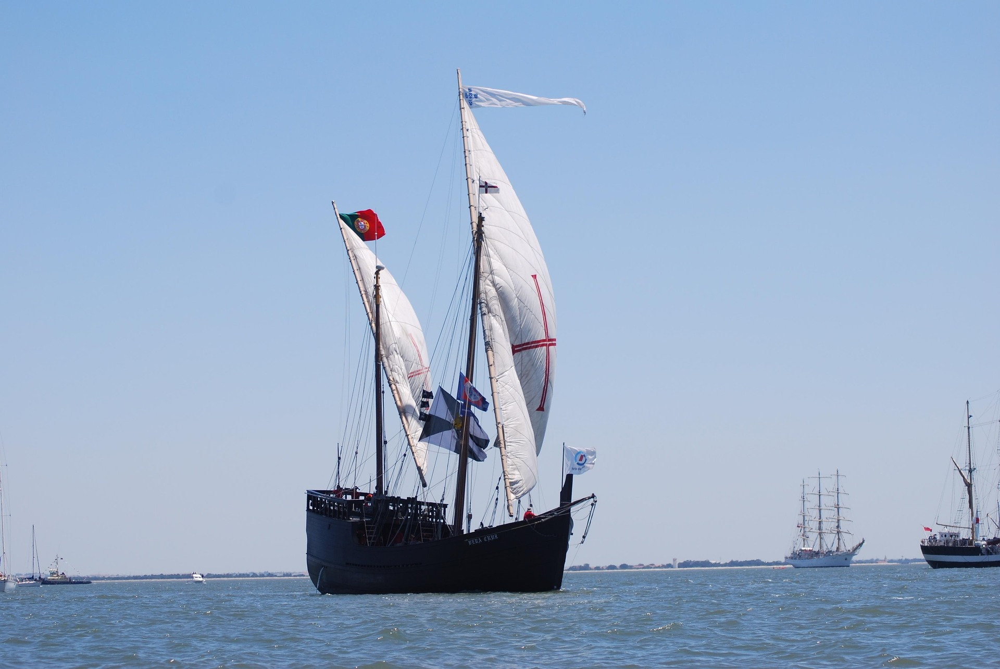

As viagens marítimas
Nos séculos XV e XVI, os navegadores portugueses viajaram por mares e chegaram a várias partes do mundo.
Em 1498, Vasco da Gama chegou à Índia por via marítima. Em 1500, a frota de Pedro Álvares Cabral chegou ao território que hoje é o Brasil.

O Padrão dos Descobrimentos recorda figuras ligadas à expansão marítima portuguesa.